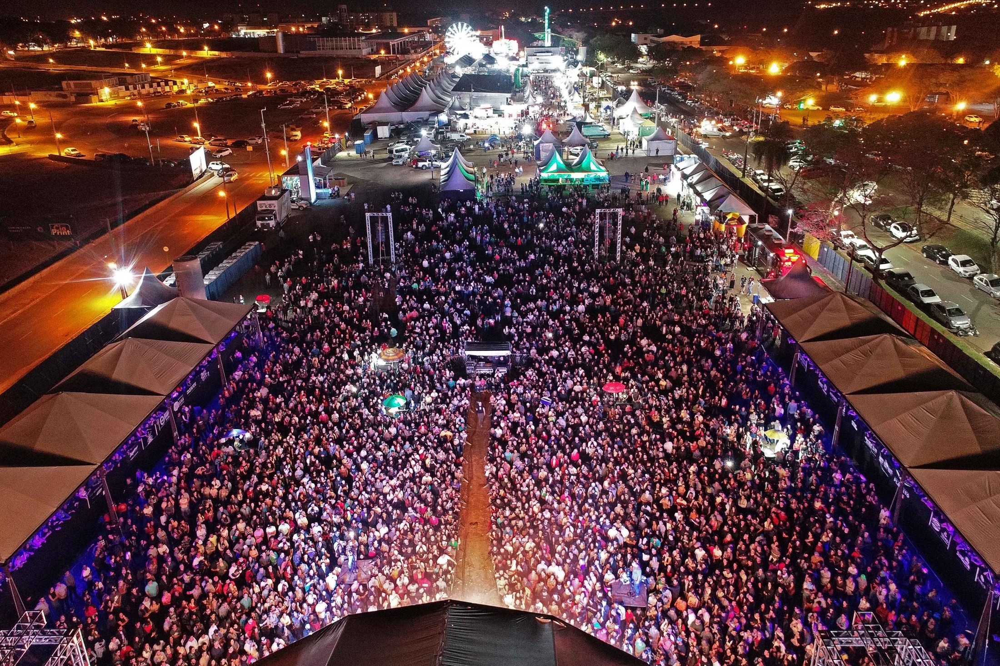
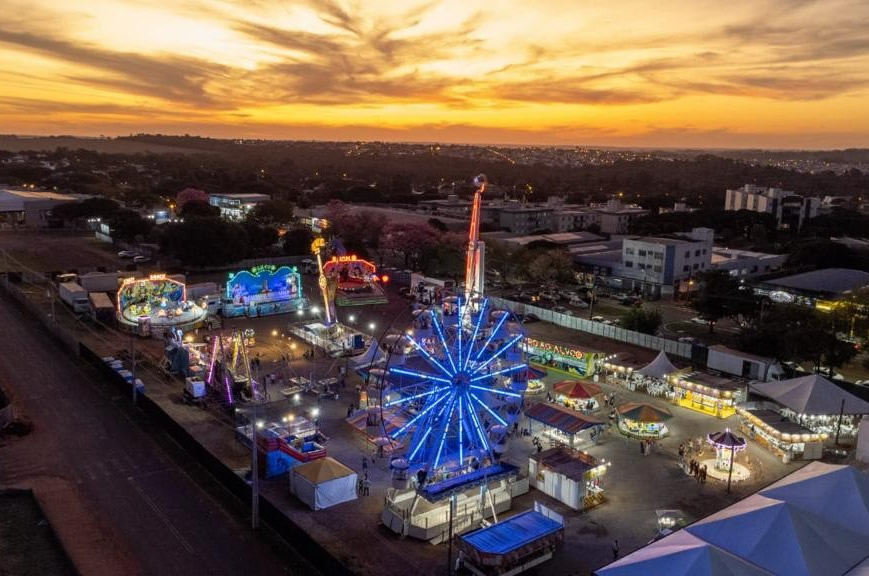

| www.partiunafaixa.com.br - Infinitas maneiras de se divertir sem gastar nenhum tostão! |
|
 |
Curta nossas redes! |


| Shows | Festas | Feiras | Gastronomia | Baladas | Bailes | Passeios | Bike | Running | Caminhadas |
Cianorte Festival  O esperado Cianorte Festival, em comemoração ao aniversário da cidade, que em 26 de julho de 2023 completa 70 anos, se aproxima e os preparativos estão a todo vapor. As festividades são uma organização da Prefeitura, em parceria com o Programa de Ação Solidária (PAS). A ocasião contará com eventos durante todo o mês, entre eles o Encontro de Reliqueiros, a 6ª Festa Literária de Cianorte – Flicia, Cavalgada, Arena Hip Hop, Desfile Cívico, exposição indústria e comércio, Espaço Agro, FEAPAM, Vila Gastronômica, parque de diversões e os shows gratuitos.“A ideia do Festival é ampliar as comemorações, promovendo eventos que agregarão diferentes públicos”, ressaltou a presidente da Comissão Organizadora, a secretária municipal de Desenvolvimento Econômico, Larissa Biggi Polli. “Desde já agradeço a toda a comissão pela dedicação nos preparativos dessa programação, que ficou bem eclética e traz a identidade de nossa gente. Teremos shows regionais, valorizando os artistas cianortenses, shows de renome nacional e novamente prestigiaremos as empresas do município na praça de alimentação. Espero que todos participem e tenham momentos de alegria e diversão”, comentou o prefeito, Marco Franzato.Confira a programação completa:• 08 e 09/07 – ENCONTRO DE RELIQUEIROSColecionadores e Mercado de Pulgas Local: Feira do Produtor (Praça Itamar Orlando Soares) 08/07 – das 12h às 21h – Show de rock com Neto e Felipe às 18h09/07 – das 9h às 17h – Atração Regional às 10h e às 15h
|
|
Sobre o Partiu! Quem somos Política de segurança Termos de uso |
Saúde Dicas Médicas Suplementos Exercícios |
Links úteis Samu Polícia militar Mídia |
Contato Fale conosco Dúvidas/Sugestões Anuncie no Partiu! |